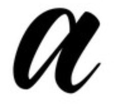
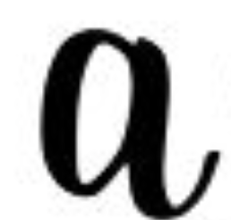
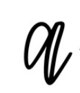

Modern calligraphy is sometimes also referred to as hand lettering. Essentially, it’s an art form that consists of creating artistic lettering using repetitive upstrokes, downstrokes, and repeating shapes. There are many modern calligraphy fonts and styles to choose from, including faux calligraphy, bounce lettering, and brush lettering.
There are many modern calligraphy alphabets to emulate, but one of the most unique—and exciting—aspects of this art form is that you can put your own twist on an alphabet, rather than striving to precisely copy it. However, it can be helpful for beginners to become familiar with some common calligraphy styles, like the three below.
Like traditional calligraphy, brush lettering is characterized by thick downstrokes and thin upstrokes on letters. However, instead of using a nib and ink like you would with traditional calligraphy, brush calligraphy is typically created using brush pens. These pens have a flexible felt tip, which responds well to pressure. When you put more pressure on the pen—during the downstrokes—you create a thicker line. When you ease up on the pressure, you create a thin line. Some artists choose to create brush lettering with a paintbrush, which works in a similar way.
Bounce lettering puts a playful, whimsical spin on brush lettering. While the foundational technique is similar to brush lettering—with increased pressure on the downstrokes and light pressure on the upstrokes—bounce lettering is much more freeform. There are many different stylistic approaches to bounce lettering, but ultimately, it requires you to work outside of the typical restraints for calligraphy. That might mean raising the bottom of a letter above the baseline or extending a portion of the letter beyond the typical upper and lower guidelines. Ultimately, unlike brush lettering, your letters won’t all be on the same straight line—instead, they’ll look “bouncy.”
Faux calligraphy is a great way to get started with modern calligraphy. Faux calligraphy imitates the thick downstrokes and thin upstrokes of traditional calligraphy, but without actually changing the weight of your pen. In this style, you use a thin pen to form the letters, then manually draw in the thick parts of each letter and fill in those spaces—ultimately creating letters that look like true calligraphy.
| Brush Lettering | Bounce Lettering | Faux Lettering |
|---|---|---|
|  |  |  |